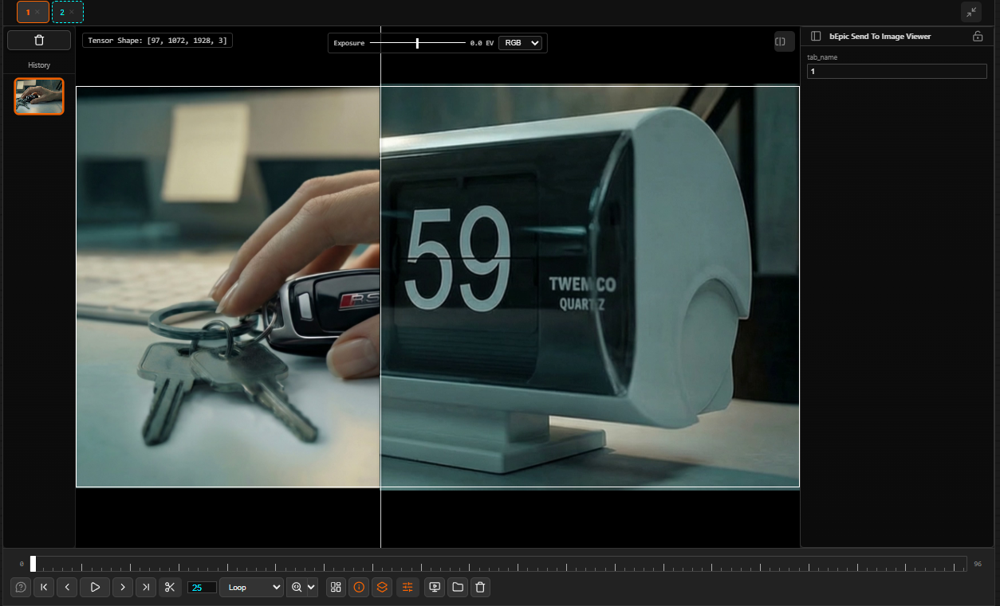

Image Comparison
bEpic ImageViewer has a powerful split-view comparison mode that works across tabs, within a single tab's history, and in multiple orientation modes.

Vertical split comparison — two images divided by a draggable white divider. Left: a hand with keys. Right: a clock face.
Starting a Comparison
Compare Two Tabs
- Make sure both tabs you want to compare are open and contain images.
- Shift+click the first tab to mark it as the base image (a cyan highlight appears).
- Shift+click the second tab — the viewer enters split-view immediately.
Compare Two History Snapshots
- Navigate to the tab whose history you want to compare.
- Shift+click one thumbnail in the history strip to select it as base.
- Shift+click another thumbnail — split-view opens.
The Compare Divider
In split-view, a bright white divider line separates the two images. Drag it left/right (vertical split) or up/down (horizontal split) to reveal more of either image. The divider position is remembered per comparison session.
Orientation Modes
The Rotate button in the toolbar cycles through three modes:
| Mode | Description |
|---|---|
| Vertical Split (default) | Left/right division — classic A/B wipe. Drag divider horizontally. |
| Horizontal Split | Top/bottom division. Drag divider vertically. |
| Contact Sheet | Both images stacked vertically in full — no divider, scroll to compare. |
Left: vertical (side-by-side) split. Right: horizontal (top-bottom) split.
Exiting Comparison Mode
Press C while hovering the viewer, or click a tab without holding Shift. The viewer returns to single-image display on the last active tab.
Comparison with Playback
Comparison mode works simultaneously with the playback timeline — both the base and compare image update as you scrub or play frames. This is useful for comparing animated sequences frame-by-frame at the same timestamp.